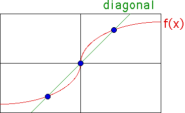
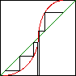
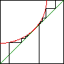

| Recall the Graphical Iteration
process: vertically to the graph, then horizontally to the diagonal. |
| What can
we say about points where the graph intersects the diagonal? These points are
unchanged under graphical iteration, so they are called fixed. The fixed
points are shown in blue below. |
|  |
| In general, a fixed point of a
function f(x) is a point x* satisfying the fixed point equation |
| f(x*) = x*. |
| Fixed points are of three kinds: |
| Stable fixed points signal long-term predictability.
If the system
winds up near enough to the fixed point, its future behavior is easy to predict: it
will approach ever nearer the fixed point. Imagine a marble rolling into a bowl. It
will wind up at the bottom of the bowl. Push the marble a little away from the
bottom of the bowl, and it will roll back to the bottom. This is the essence of
stability: small perturbations fade away. |
 |
| Unstable fixed points behave in the opposite
way. Placed EXACTLY at the fixed point, there you will stay. But stray even the slightest
molecule away and you depart rapidly. Invert the bowl and you have the right picture. |
 |
| Indifferent fixed points are neither of the
above cases: nearby points either do not move at all, or some move nearer while others
move farther away. |
 |
|
| Here is a more theoretical
analysis of the fixed points of the logistic map. |